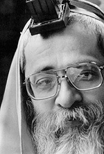

Renowned Mentor to the Baal Teshuva Movement Marks 50 Years of Service
Rabbi Lipskier takes a personal interest in each individual and helps kindle the spark of Judaism that lies at the heart of every Jew. Every person who has studied with Rabbi Lipskier has emerged to live with more enthusiasm for Judaism.

Rabbi Lipskier taught at Hadar HaTorah until 1967 and then after getting married went to Italy on shlichus. In 1972, he returned to the States. He was offered an outreach position on college campuses. Rabbi Lipskier wrote to the Rebbe and the Rebbe instructed him to accept the offer and gave his blessings for success.
In 1962, while Avrohom Lipskier was still a young rabbinical student studying for smicha, young men with long hair and glazed eyes—hippies and the like—were drawn to Crown Heights and would wander into 770. In those days, the locals were afraid of them, afraid that they would hook their children on drugs and lead them astray. But Rabbi Lipskier related to them and initiated a rapport with many of them. Beneath the jeans and long hair, those young men were sick of materialism, they craved for something deeper. Although they weren’t aware that they had neshamas and had no idea what a soul is all about, they were driven to get in touch with that eternal spark within themselves. And Rabbi Lipskier knew it.
Young Avrohom Lipskier offered them “soul food” —Torah, in particular Chabad Chassidus, as expressed in the classic Chassidus text, the Tanya. One-on-one learning lead to small study groups. After a while, Rabbi Lipskier had a class in 770 for these young outsiders. They came and went, but none were unaffected by Rabbi Lipskier’s love and concern for both their physical and spiritual welfare. Making a class with young men so remote from Yiddishkeit was unheard of; it was so new that people did not know who was more outlandish — Rabbi Lipskier or the hippies.
However, Rabbi Yisroel Jacobson a”h—the mashpia to the rabbinical students in 770—encouraged Rabbi Lipskier to continue learning with them. The following year, with a blessing from the Rebbe, Rabbi Jacobson opened Hadar HaTorah and hired Rabbi Lipskier as the main teacher.
Towards the end of the spring semester, Rabbi Lipskier advertised a summer learning program in Morristown for college students, called “Live and Learn.” A short while later, Rabbi Gurary, director of Chabad campus activities in Buffalo, contacted Rabbi Lipskier. He said he was bringing five students from the University of Buffalo to spend Shavuos in Crown Heights. “If they don’t go straight from Crown Heights to learn in Morristown, they’ll go in all different directions and we’ll lose them.” It was arranged for the students to come ten days early, and with those five students, Rabbi Lipskier started the summer program. As it turned out, about two dozen other students attended the program that summer, some for a few days or a week, others for longer.
One of them, Avrohom Schwarzberg, wanted to continue learning. Rabbi Lipskier advised him to write to the Rebbe. The Rebbe replied, “Since you were successful where you were until now, you should stay.” Yeshiva Tiferes Bachurim had begun!
Unlike most yeshivas and rabbinical colleges that cater to those aspiring to rabbinical ordination, Rabbi Lipskier attracted and continues to attract many who have little or no interest in becoming rabbis. In fact, many students arrive without even knowing how to read Hebrew. They range in age from just having graduated high school to seasoned military retirees. College kids, Russian immigrants, professionals, university professors, researchers—they always find the door to Rabbi Lipskier’s office open. Some graduate in a few years, others visit for a week, some return to college after a summer or winter break, others go on to become rabbis, but no one leaves empty-handed, or empty-hearted. Rabbi Lipskier takes a personal interest in each individual and helps kindle the spark of Judaism that lies at the heart of every Jew. Every person who has studied with Rabbi Lipskier has emerged to live with more enthusiasm for Judaism.
Having spent nearly 50 years as a Rosh Yeshiva for baalei teshuva, Rabbi Lipskier has a unique method of study which begins with giving the students direct access to the original Torah texts. They acquire the tools of language and logic, delve into Talmud and Halacha, and above all, grow in the practice of Judaism. He believes that sincere Torah study must provide motivation to perform mitzvos and help others.
What is Rabbi Lipskier’s secret? What is the most important thing he tries to impress upon his students? Rabbi Lipskier says that his primary message is the importance of the study and implementation of Chassidus, and in particular, a deep and profound attachment to the Rebbe. This approach, he says, is responsible for his success in stirring Jewish hearts and building, not followers, but Jewish leaders.
This year marks the 50th anniversary of Rabbi Lipskier’s remarkable service as an emissary of the Rebbe in the fields of chinuch and hafotzoh. Hundreds of stories abound of Rabbi Lipskier’s direct impact on Yiddishe Neshamas, year after year. Rabbi Lipskier has earned not just the respect, but the love, admiration, and gratitude of untold thousands around the globe. They came in with long hair and many questions, and they left with long beards and many answers. Today, Rabbi Lipskier’s former students, many of whom started out as non-practicing Jews, have seen their Jewish identity and life blossom.
Many of his former students work as career professionals in diverse secular fields, many more have gone on to serve in leadership positions of Jewish communities the world over as teachers, yeshiva principals, Chabad shulchim and rabbonim. Others have remained connected as lay leaders in their communities or simply gone on to continuing a life in that position of ultimate responsibility and inestimable value as fathers of their own Jewish families.
Rabbi Lipskier’s students believe that his success is based on his vast knowledge, his empathetic heart, extreme devotion to his students, and his humble and unswerving connection to the Rebbe. He seems to “get” anyone and everyone who walks in the door and know just what they need to hear.
Rabbi Lipskier continues to be accessible as a mentor to his talmidim the world over. However, he does not see them as his students, but rather as colleagues and leaders with a mission: to strengthen Jewish life everywhere, filling the physical world with goodness and holiness, making it a place where the Divine presence can ultimately dwell.
Rabbi Avrohom Lipskier is currently the Rosh Yeshiva of Yeshiva Tiferes Menachem in the picturesque community of Seagate, Brooklyn—now in its 13 year. The yeshiva and former talmidim will be conducting several new initiatives to mark this occasion, as well as to celebrate Rabbi Lipskier’s (sh’yichyeh) 50 years of ongoing work as an educator and mentor.
To contact Rabbi Lipskier or the Yeshiva, please visit: www.Tiferes.org.
Beis Moshiach. "Renowned Mentor to the Baal Teshuva Movement Marks 50 Years of Service." Beis Moshiach, no. 848 (August 31, 2012).